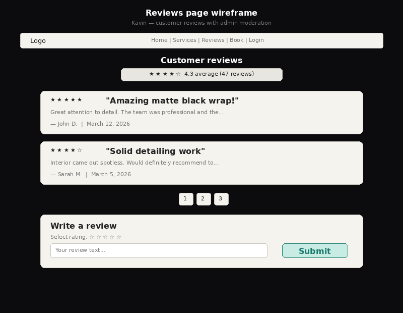
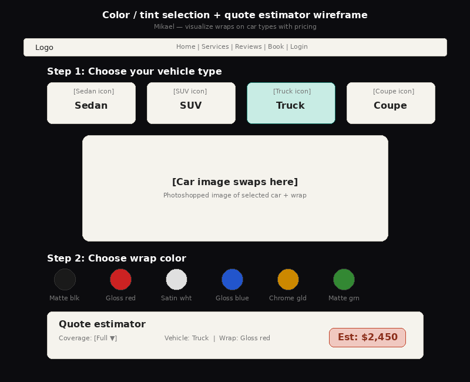
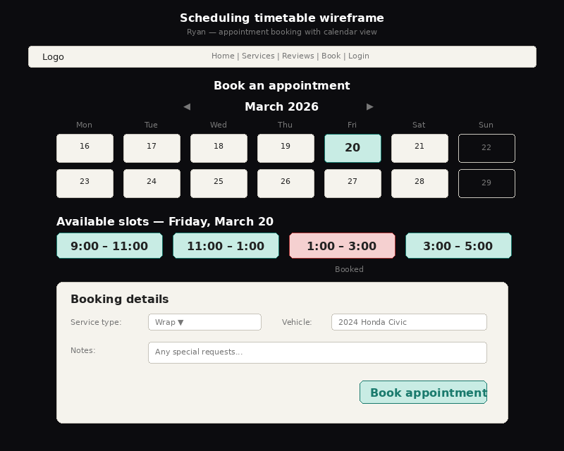

Reviews Page — Kavin

Color/Tint Selector & Quote — Mikael

Scheduling Timetable — Ryan
.png)
Login & Admin Dashboard — Jagbir
KP Wraps — Car Wrapping & Detailing Web Application
| Team Name: | Real Majik Inc |
| Team Members: | Jagbir, Kavin, Ryan, Mikael |
| Client Name: | Parmeet Riar |
| Client Affiliation: | Friend of Jagbir |
| App Name: | KP Wraps |
KP Wraps is a full-stack web application designed for a local car wrapping and detailing business. The app serves two audiences: customers, who can explore wrap options, visualize how different wraps look on their vehicle type, get instant price estimates, book appointments, and leave reviews — and administrators, who can manage scheduling, moderate reviews, and maintain detailed client records including transaction history and job notes.
Authentication & role management. Stores all user accounts to enable login, session management, and role-based access.
| Field | Type | Notes |
|---|---|---|
| user_id | INT(11) | Primary Key, AUTO_INCREMENT |
| VARCHAR(255) | Unique, used for login | |
| password_hash | VARCHAR(255) | bcrypt hashed password |
| first_name | VARCHAR(100) | |
| last_name | VARCHAR(100) | |
| phone | VARCHAR(20) | Nullable |
| role | VARCHAR(10) | DEFAULT 'client'; 'client' or 'admin' |
| created_at | TIMESTAMP | DEFAULT current_timestamp() |
Customer-submitted reviews. Holds all customer reviews so they can be displayed publicly after admin approval.
REMOVED — Image upload field: An image upload field was initially considered for the reviews table. It was dropped after client consultation — deemed too complex for the project scope and of limited value to the workflow.
| Field | Type | Notes |
|---|---|---|
| review_id | INT(11) | Primary Key, AUTO_INCREMENT |
| user_id | INT(11) | FK → users |
| rating | INT(11) | 1–5 stars |
| title | VARCHAR(150) | Review headline |
| body | TEXT | Full review text |
| is_approved | TINYINT(1) | DEFAULT 0 (false), admin-moderated |
| created_at | TIMESTAMP | DEFAULT current_timestamp() |
Customer bookings and schedule slots. Tracks all scheduled appointments so customers can book and admins can manage the calendar.
| Field | Type | Notes |
|---|---|---|
| appointment_id | INT(11) | Primary Key, AUTO_INCREMENT |
| user_id | INT(11) | FK → users |
| service_type | VARCHAR(50) | 'wrap', 'detail', 'both', 'chrome delete' |
| appointment_date | DATE | |
| time_slot | VARCHAR(20) | e.g. '10:00-12:00'; added via ALTER TABLE NEW |
| status | VARCHAR(20) | 'pending', 'confirmed', 'completed', 'cancelled' |
| vehicle_info | VARCHAR(255) | Make/model/year description |
| service | VARCHAR(100) | Free-text custom job description; DEFAULT 'Wrap Consultation'; added via ALTER TABLE NEW |
| notes | TEXT | Customer or admin notes |
| created_at | TIMESTAMP | DEFAULT current_timestamp() |
CHANGED — service_type: 'chrome delete' added as a service option after the client requested it be listed alongside wraps and detailing.
NEW — time_slot field: Added to the appointments table via ALTER TABLE appointments ADD COLUMN time_slot VARCHAR(20) NOT NULL AFTER appointment_date so the scheduling system can track specific booking windows.
NEW — service field: Added via ALTER TABLE appointments ADD COLUMN service VARCHAR(100) DEFAULT 'Wrap Consultation' so customers can describe custom jobs beyond the preset service_type dropdown. Client wanted flexibility for unusual or bespoke requests.
Client payment and job history (admin). Gives admin a financial record tied to each client.
CHANGED — transactions table structure: The implemented table differs from the original plan. Fields were simplified during development: payment_method, job_description, status, and transaction_date were replaced with description, type (an enum), and created_at. The appointment_id foreign key was also removed to keep the table simpler. These changes reflect what was practical to build within the project scope.
| Field | Type | Notes |
|---|---|---|
| transaction_id | INT(11) | Primary Key, AUTO_INCREMENT |
| user_id | INT(11) | FK → users |
| description | VARCHAR(255) | Description of work/charge (replaces job_description) CHANGED |
| amount | DECIMAL(10,2) | Total charged |
| type | ENUM('charge','payment','refund') | Transaction type (replaces payment_method + status) CHANGED |
| created_at | TIMESTAMP | DEFAULT current_timestamp() (replaces transaction_date) CHANGED |
| appointment_id | INTEGER | Removed — FK link to appointments not implemented |
| payment_method | VARCHAR(50) | Removed — replaced by type enum |
| job_description | TEXT | Removed — replaced by description |
| status | VARCHAR(20) | Removed — replaced by type enum |
| transaction_date | TIMESTAMP | Removed — replaced by created_at |
In-site customer inquiries. Stores messages submitted via the contact page so the admin can read and follow up externally via email.
NEW — contact_messages table: Added in response to client feedback. The client requested an in-site contact form for customers to send inquiries directly. The admin reads submissions and replies via their own email — the client explicitly did not want an in-app reply feature. An is_read flag was added so the admin can track which messages have been seen.
| Field | Type | Notes |
|---|---|---|
| message_id | INT(11) | Primary Key, AUTO_INCREMENT |
| name | VARCHAR(150) | Sender's full name |
| VARCHAR(255) | Sender's email (validated) | |
| subject | VARCHAR(200) | Message subject |
| body | TEXT | Message content |
| is_read | TINYINT(1) | DEFAULT 0; admin marks messages as read NEW |
| created_at | TIMESTAMP | DEFAULT current_timestamp() |
Submit reviews, view approved reviews, admin will be able to moderate reviews.
Logged-in users fill out a form with a star rating, title, and body. On submit, PHP validates input and performs an INSERT INTO reviews. The review defaults to is_approved = 0 pending admin moderation. Client-side: JavaScript validates form fields before submission and provides star-rating interactivity via click handlers.
Public page fetches all reviews where is_approved = 1 via a SELECT joined with users for display name. Client-side: JS handles pagination and optional sorting by date or rating. The average star rating is displayed prominently at the top of the page before individual reviews.
Admin panel shows all reviews. Approve toggles is_approved via UPDATE. Delete removes the row with DELETE FROM reviews. Client-side: JS confirms deletion with a modal prompt.
Be able to view different wraps and be able to visualize them on pre-made images. This feature also creates an estimated quote given details like car type, wrap type, etc.
Page loads all car types and wraps via SELECT queries. Client-side: JS renders selectors for car type and wrap color/finish, now including chrome delete as a selectable service option.
CHANGED — Chrome delete added as service option: Client asked for chrome deletes to be surfaced as a service alongside wraps and detailing. The selector and quote estimator now account for it.
When both car type and wrap are selected, JS fetches the matching image via an AJAX request to PHP. The image element's src is swapped with a CSS crossfade transition. Stock photos of real completed wrap jobs are used instead of computer-generated images, providing a more professional and realistic preview for customers.
CHANGED — Stock photos replace computer-generated images: Originally planned to use computer-generated wrap visualizations. After showing the client early mockups, they felt real photos of completed jobs would look more trustworthy and professional to customers. All car/wrap image assets were updated accordingly.
Client-side JS computes a price using the selected wrap's price per square foot, vehicle size factor, and coverage multiplier. The calculation happens client-side for instant feedback.
View available time slots, book and cancel appointments, admin will be able to manage the scheduling system.
PHP queries appointments for a given date to find taken slots. JS renders a calendar grid with available and unavailable slots visually distinguished.
Logged-in user selects a date, time slot, service type, and enters vehicle info. A free-text service field has been added so customers can describe custom jobs beyond the preset service_type dropdown. PHP checks availability, then performs an INSERT INTO appointments. Client-side: JS validates that all required fields are filled.
CHANGED — Free-text service field added: Client noted that many customers have specific or unusual requests that don't fit neatly into preset categories. A free-text field was added so customers can describe exactly what they need. Stored in the new service column, added to the appointments table via ALTER TABLE.
Client or admin can cancel. PHP performs UPDATE appointments SET status = 'cancelled'. Client-side: JS shows a confirmation modal before sending the request.
Admin views all appointments in a timetable. Can confirm, reschedule, or add notes via UPDATE queries.
Register new accounts, login and logout, admin will have more and special permissions compared to client users.
Registration form collects email, password, name, and phone. PHP hashes the password with password_hash() and performs INSERT INTO users with role = 'client'. Client-side: JS validates email format, password strength, and required fields.
PHP verifies credentials via SELECT from users, checks with password_verify(), then starts a session with role info. Logout destroys the session. Client-side: JS toggles UI elements based on session state.
Admin can search and view all users, edit client details, and enter transaction records (INSERT INTO transactions). Also views a client's transaction history and charges/payments via SELECT queries. Client-side: JS provides search/filter on the client list and tabbed views for profile, history, and appointments.
Public contact form collects name, email, subject, and message body. PHP validates input and performs an INSERT INTO contact_messages. The is_read flag defaults to 0 so the admin can track unread messages. Admin reviews submissions and replies externally via email — no in-app reply feature per client request. Client-side: JS validates required fields and email format before submission.
NEW — Contact page & inquiry function: Added based on client feedback. Client wanted customers to be able to reach out directly from the site rather than having to find contact info elsewhere. Messages are stored in the contact_messages table and the admin replies via email.
Each team member owns a vertical slice of end-to-end functionality — handling the HTML, CSS, JavaScript, PHP, and database work for their piece.
| Kavin | Reviews System — Reviews page UI, star-rating component (JS), review submission form, PHP review CRUD endpoints, admin review moderation panel, and the reviews table. Also added average star rating display at the top of the public reviews page based on client feedback on Increment 1. |
| Mikael | Wrap Selector & Estimator — Car selector UI, image swap animation using stock photos CHANGED (JS), quote calculator logic (JS + PHP), PHP endpoints for image lookup, chrome delete service option NEW, and related database tables. |
| Ryan | Scheduling System — Booking calendar UI, time-slot availability logic (JS + PHP), appointment creation/cancellation endpoints including free-text service field NEW, admin schedule management view, and the appointments table. |
| Jagbir | Login & Admin Dashboard — Login/register forms, PHP session management and role-based routing, admin dashboard layout, client profile management, transaction entry, and the users and transactions tables. Additionally: contact page and contact_messages table NEW, splash/landing page NEW, and informational pages (mission statement, about, contact info) NEW — all added based on client feedback, to be implemented after Increment 1. |

Reviews Page — Kavin

Color/Tint Selector & Quote — Mikael

Scheduling Timetable — Ryan
Login & Admin Dashboard — Jagbir
The client was happy with what we presented and gave no feedback on the core functionalities. All they asked for was some additional informational webpages regarding things like mission statement, about, and contact information. These changes being outside the core 4 full-stack functionalities will be implemented after the first increment as they require front-end technologies only.
Summary of changes made in response to initial client feedback:
After completing Increment 1, we presented the working application to the client, Parmeet Riar. The session covered all four core features: the reviews system, the wrap visualizer and quote estimator, the scheduling system, and the login/admin dashboard.
Overall, the client was very positive about the progress. They were particularly impressed with the booking calendar and the wrap visualizer, noting that seeing real stock photos made the tool feel much more polished.
"The booking page looks exactly like what I had in mind — customers can actually see what times are open and just click to book. That's going to save me so many phone calls."
"The wrap photos look way better than the mock-up we saw before. Using real photos was definitely the right call. It looks professional."
The client also had a few specific requests and pieces of feedback after seeing the live increment:
1. Contact page priority. After seeing the full app, the client emphasized that the contact page was more important to them than originally conveyed. They want it completed alongside (or immediately after) the informational pages rather than as an afterthought.
"I get a lot of people who just want to ask a quick question before booking. If they can do that right on the site, I think more of them will actually follow through."
2. Admin notes on appointments. The client asked whether the admin could add internal notes to specific bookings (e.g., to flag a customer's specific preferences or vehicle details that came up over the phone). This feature was already included in the appointments table via the notes field and the admin manage schedule view, which the client was pleased to hear.
"Oh perfect, I didn't realize that was already in there. That's exactly what I need — sometimes people call and give me details I don't want to forget."
3. Star rating display. The client suggested that the public reviews page display the average star rating prominently at the top, rather than only showing individual reviews. This is a minor front-end addition that Kavin will incorporate before the final submission.
"Most people just want to see the number — like 4.8 stars or whatever — right away before they scroll through everything. That would look really good up top."
No major structural changes to the plan were required as a result of this meeting. The contact page has been elevated in priority, and the average rating display has been added as a small addition to the reviews page. All other core functionality was approved as-is.